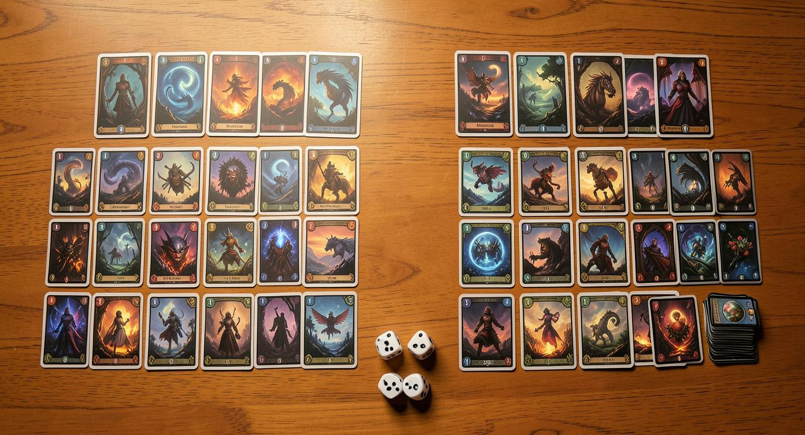
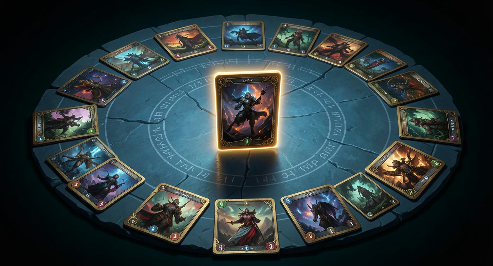
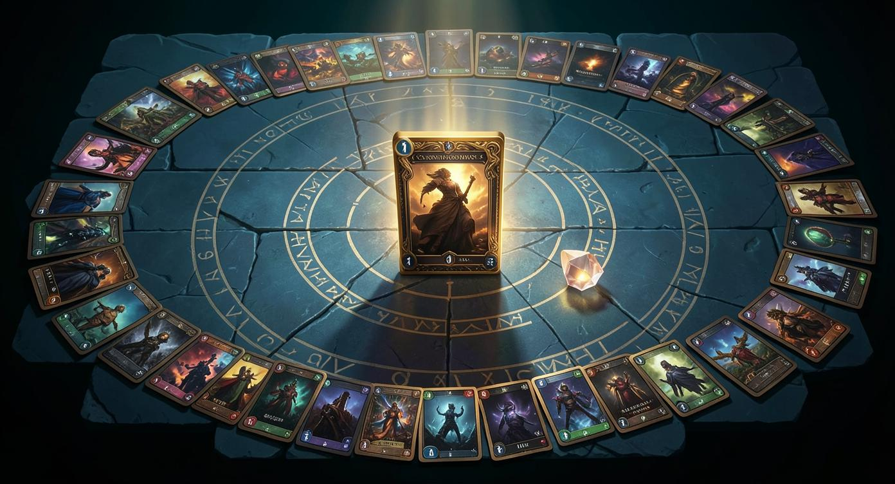

Sesenta cartas, veinte vidas
Standard
El formato de siempre y sin comandante: sesenta cartas en la biblioteca, veinte vidas y las reglas oficiales. Eliges mazo, barajas y a jugar — sin zona de mando de por medio.
- 60 cartas
- 20 vidas
- Sin comandante
Jugar Standard →

Sesenta cartas, un comandante
Brawl
El formato corto: sesenta cartas sin repetidas y un comandante siempre a mano en la zona de mando. Partidas rápidas, con la misma tensión que el Commander de verdad.
- 60 cartas
- 30 vidas
- 21 de daño de comandante
Jugar Brawl →

Cien cartas, un comandante
Commander
Cien cartas únicas, el comandante en la zona de mando y veintiún puntos de daño de comandante como sentencia. El formato largo, con más margen para montar la mesa.
- 100 cartas
- 40 vidas
- 21 de daño de comandante
Jugar Commander →

Dos sobres, un capitán
Captain Jumpstart
Abres dos sobres de veinte cartas, los mezclas en un mazo singleton de cuarenta y eliges una criatura como capitán. El mazo se arma solo; tú decides a quién mandas.
- 2 × 20 cartas
- 40 singleton
- 20 vidas
Jugar Captain →